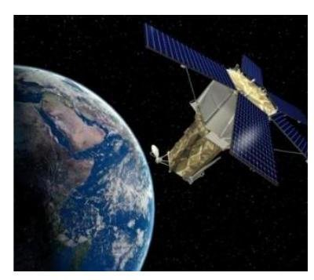

Viết lời giải đầy đủ. Bấm “Nộp để AI gợi ý điểm”: AI chấm gợi ý theo biểu điểm, giáo viên sẽ duyệt điểm chính thức.
1
Nhận biết
(SGK - KNTT) Nêu loại sóng điện từ ứng với mỗi tần số sau: a) $200\text{ kHz}$; b) $100\text{ MHz}$; c) $5\cdot10^{14}\text{ Hz}$; d) $10^{18}\text{ Hz}$.
2
Nhận biết
(SGK - KNTT) Nêu tên sóng điện từ trong chân không ứng với mỗi bước sóng. a) $1\text{ km}$; b) $3\text{ cm}$; c) $5\ \mu m$; d) $500\text{ nm}$; e) $50\text{ nm}$; g) $10^{-12}\,m$.
3
Thông hiểu
Cho biết bước sóng của ánh sáng đỏ và bước sóng của ánh sáng tím lần lượt là $760\text{ nm}$ và $380\text{ nm}$. Hãy xác định tần số của vùng ánh sáng nhìn thấy.
4
Thông hiểu
(SGK - CTST) Vào thời điểm năm 2022, điện thoại di động ở Việt Nam sử dụng sóng điện từ có tần số trong khoảng từ $850\text{ MHz}$ đến $2600\text{ MHz}$. Tính bước sóng của sóng điện từ tương ứng với dải tần số này. Mắt chúng ta có thể thấy được các sóng này không? Vì sao?
5
Thông hiểu
Một vệ tinh nhân tạo chuyển động ở độ cao $575\text{ km}$ so với mặt đất phát sóng vô tuyến có tần số $92,4\text{ MHz}$ với công suất bằng $25,0\text{ kW}$ về phía mặt đất. Hãy tính cường độ sóng nhận được bởi một máy thu vô tuyến ở mặt đất ngay phía dưới vệ tinh. Bỏ qua sự hấp thụ sóng của khí quyển.

6
Thông hiểu
(SBT - Vật lý 11 CTST) Biết tốc độ ánh sáng trong chân không là $c=3\cdot10^{8}\,m/s$. a) Tính bước sóng của một ánh sáng có tần số $f=6\cdot10^{14}\text{ Hz}$. b) Bước sóng của ánh sáng này bằng bao nhiêu khi truyền trong nước có chiết suất bằng $4/3$?